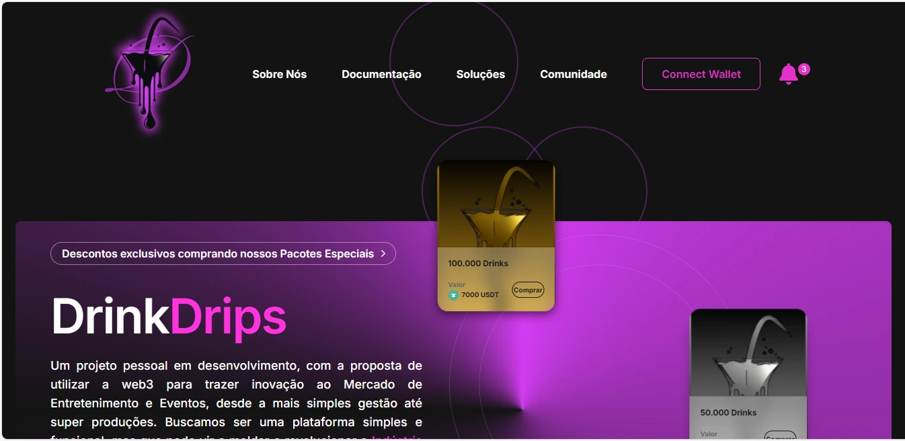
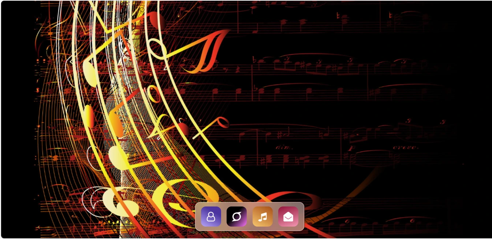

- Interfaces interativas e dinâmicas com HTML, CSS e JavaScript.
- Design responsivo com Flexbox, Grid e media queries.
- Uso de React.js, Angular.js, Vue.js para apps escaláveis.
- Acessibilidade com práticas WCAG para inclusão digital.
- Otimização de performance: lazy loading, minificação e mais.
- Controle de versão com Git e colaboração eficiente.
Qualificações
Web
- HTML
- CSS
- Javascript
- Bootstrap
- React
- Solidity
Assistência Técnica
- Hardware
- Software
- Redes
ITED
- Fibra Ótica
- Fusões
- Par de Cobre
- Cabeamento Estruturado
- Conectorização e Certificação
Projetos

